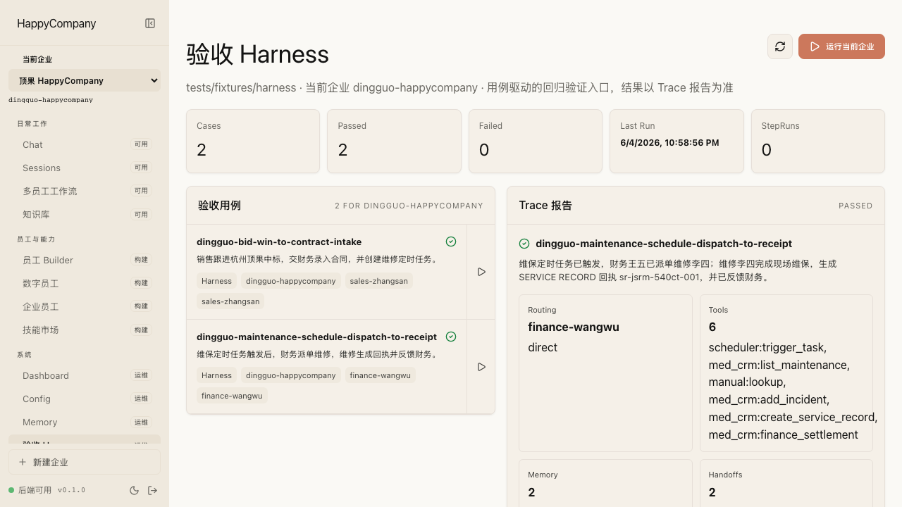
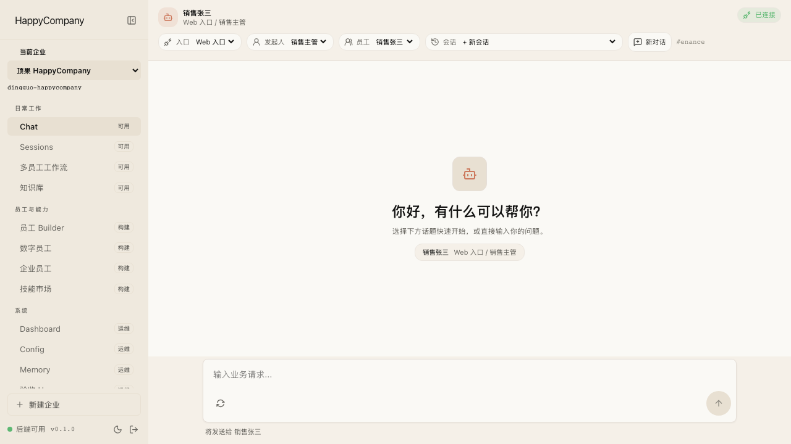
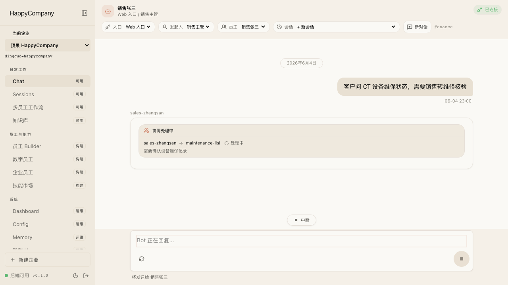
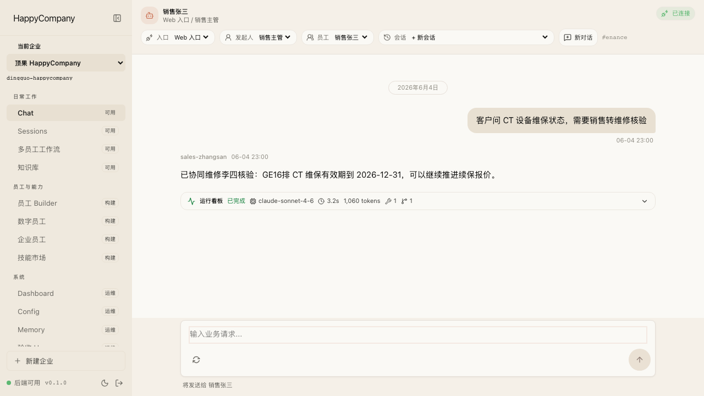
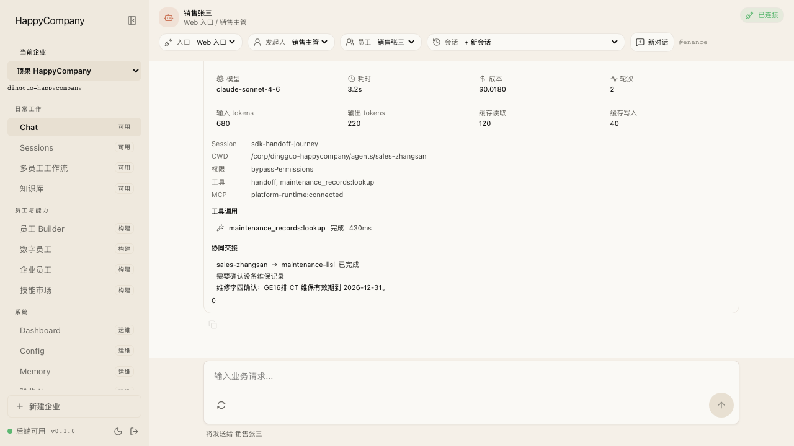
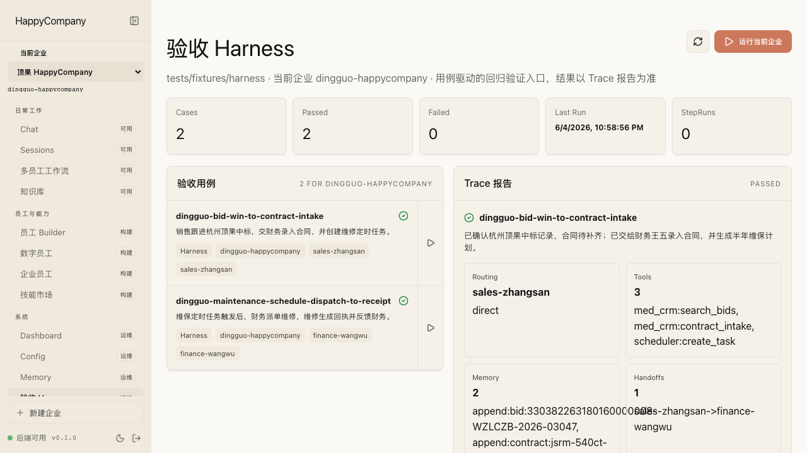
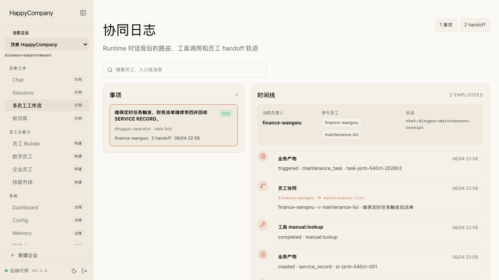
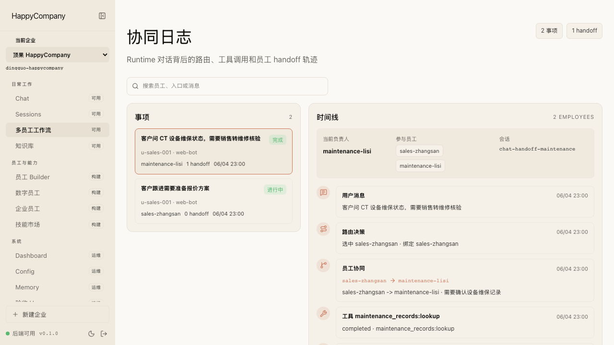
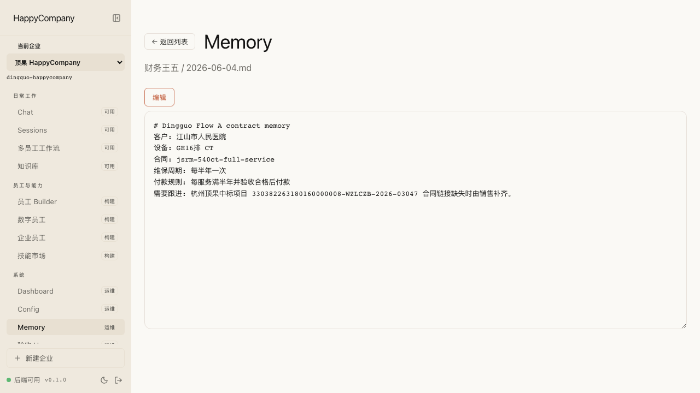
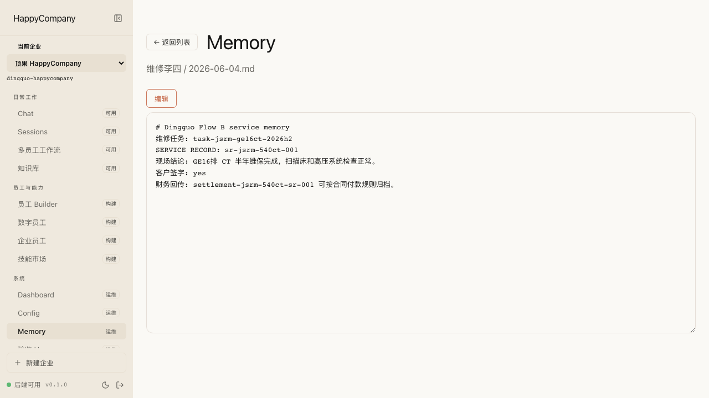

产品故事一：从中标机会到维保计划
适合销售负责人和财务负责人看：平台如何把“中标了”变成“合同已录入，后续维保已排期”。
客户怎么操作
- 在平台里向销售张三发起“跟进杭州示例医疗近期中标项目”。
- 销售张三查询中标记录，识别项目、医院、金额和合同状态。
- 需要财务处理时，销售把合同录入和维保周期解析交给财务王五。
- 财务王五完成合同 intake，并生成后续维保计划。
客户看到的结果
平台展示中标、合同录入和维保计划三个结果，不只是一个“已完成”的回复。

这份报告用客户能理解的方式展示：销售、财务、维修三个数字员工如何在平台里协同完成两条真实业务链路，并把合同、维保计划、维修回执和结算信息沉淀下来。
已跑通产品故事一：招标跟进，确认杭州示例医疗中标后，销售交给财务录入合同，财务解析维保周期并生成维保计划。
已跑通产品故事二：维保任务触发后，财务派单维修，维修员工查阅说明书和历史记录，完成现场服务、回执和财务结算交接。
客户价值客户不需要理解后台测试，只需要看到：任务从一个员工流到下一个员工，每一步有结果、有记录、有复盘、有记忆。
适合销售负责人和财务负责人看：平台如何把“中标了”变成“合同已录入，后续维保已排期”。
平台展示中标、合同录入和维保计划三个结果，不只是一个“已完成”的回复。
适合运营、维修和财务一起看：平台如何把定时维保任务变成现场服务记录，并回到财务闭环。
维修任务、维修回执和财务结算都成为平台可追踪的业务结果。

客户在 Chat 里看到的是一个自然对话入口。数字员工之间转交任务时，平台会显示协同状态；完成后，主对话返回业务结果。




客户管理者不只看聊天结果，还可以查看流程视角：谁处理了、谁转交给谁、产生了哪些业务结果。



长会话不是靠临时上下文硬撑。平台会把关键事实沉淀到对应员工的 Memory，方便下次继续处理同一客户、同一合同、同一设备。


| 能力 | 客户能看到什么 | 状态 |
|---|---|---|
| 招标到合同 | 杭州示例医疗中标记录、合同 intake、维保计划 | 已跑通 |
| 维保到回执 | 财务派单、维修日志、SERVICE RECORD、财务结算 | 已跑通 |
| 员工协同 | Chat 中协同处理中、协同结果、运行看板 | 已展示 |
| 管理复盘 | 协同日志、业务产物、员工 Memory | 已展示 |
| 后续产品化 | 合同 OCR、长期招标监控、真实说明书检索、附件签字图片 | 建议作为下一阶段 |